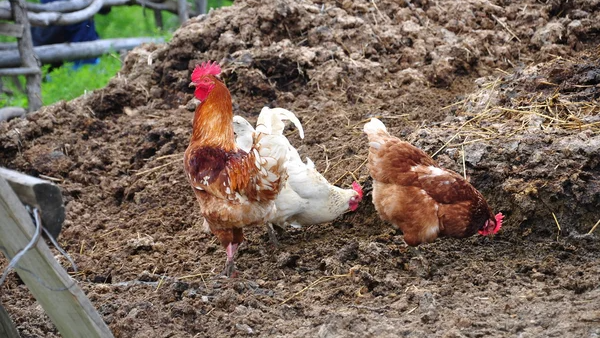

Perundungan di Tempat Kerja di Jakarta Pusat
Pada Agustus 2024, seorang karyawan swasta di Tanah Abang, Jakarta Pusat, berinisial AS, menjadi korban perundungan oleh rekan kerjanya, AP. Perundungan tersebut menyebabkan AS mengalami cedera serius pada mata hingga nyaris buta.
Perundungan di Media Sosial di Geelong, Australia
Pada Februari 2025, TikTok menutup beberapa akun yang digunakan untuk perundungan terhadap siswa di Geelong, Australia. Akun-akun tersebut menyebarkan konten yang merendahkan penampilan dan status hubungan siswa, yang ditonton oleh ratusan ribu orang.
Kasus Perundungan di Tempat Kerja di Komisi Penyiaran Indonesia (KPI)
Pada 2021, seorang pegawai di Komisi Penyiaran Indonesia (KPI) mengalami perundungan verbal dari seniornya. Kasus ini mencuat setelah korban menulis surat yang kemudian viral di media sosial, mengungkapkan pelecehan yang dialaminya di tempat kerja.
Kasus Perundungan di Media Sosial terhadap Remaja di Indonesia
Pada 2021, seorang siswa di Bekasi menjadi korban perundungan di grup chat WhatsApp kelasnya. Perundungan ini menyebabkan trauma psikologis pada korban dan menyoroti pentingnya kesadaran akan cyberbullying di kalangan remaja.
Kasus Cyber Bullying Luluk Nuril
Kasus yang melibatkan selebgram Luluk Sofiatul Jannah (Luluk Nuril) mencuri perhatian publik pada September 2023, setelah ia dituduh melakukan cyberbullying terhadap seorang siswi SMK yang sedang menjalani praktik kerja lapangan (PKL) di Probolinggo. Dalam insiden ini, Luluk diduga melakukan tindakan verbal yang menyakitkan lewat media sosial TikTok, yang mengakibatkan korban merasa kehilangan rasa percaya diri dan sempat berencana untuk berhenti dari PKL.
Setya Novanto – Kasus E-KTP (Kerugian Rp 2,3 Triliun)
Setya Novanto, mantan Ketua DPR, adalah salah satu tokoh utama dalam skandal korupsi E-KTP yang terkenal itu. Korupsi dalam proyek pengadaan KTP elektronik ini menyebabkan kerugian negara yang sangat besar, hingga Rp 2,3 triliun. Meski demikian, Novanto hanya dijatuhi hukuman 15 tahun penjara dan denda Rp 500 juta. Bagi banyak orang, hukuman tersebut dirasa tidak setimpal dengan besarnya kerugian negara, apalagi mengingat ia adalah seorang pejabat tinggi yang seharusnya melindungi kepentingan publik.
Rudi Rubiandini – Kasus Suap Sektor Migas (Kerugian 1,4 Juta USD)
Rudi Rubiandini, mantan Kepala SKK Migas, terlibat dalam suap yang berkaitan dengan sektor migas. Ia menerima US$ 1,4 juta dari pihak-pihak yang ingin mempengaruhi keputusan terkait kontrak migas. Meski kerugian negara tidak sebesar kasus lainnya, suap tersebut tetap merusak integritas sektor migas yang sangat penting bagi perekonomian Indonesia. Rudi dijatuhi hukuman 7 tahun penjara, namun banyak yang merasa ini tidak cukup memberikan efek jera mengingat kedudukannya yang tinggi dan dampak besar dari tindakannya.
Budi Mulya – Kasus Bank Century (Kerugian Rp 6,7 Triliun)
Kasus Bank Century adalah salah satu skandal terbesar yang pernah terjadi di Indonesia. Budi Mulya, mantan Deputi Gubernur Bank Indonesia, terlibat dalam keputusan yang menyebabkan negara mengeluarkan Rp 6,7 triliun untuk bailout bank tersebut. Meski kerugian negara sangat besar, Budi hanya dijatuhi hukuman 13 tahun penjara. Banyak yang merasa ini tidak cukup, mengingat dampak jangka panjang yang ditimbulkan terhadap perekonomian Indonesia.
Anggodo Widjojo – Kasus Suap Pengadilan (Kerugian Ratusan Miliar)
Anggodo Widjojo, seorang pengusaha, terlibat dalam suap kepada hakim-hakim untuk memenangkan kasus-kasus yang sedang berjalan di pengadilan. Ia terbukti memberikan ratusan miliar rupiah untuk mempengaruhi keputusan hukum. Namun, hukuman yang diterimanya hanya 6 tahun penjara. Banyak yang berpendapat bahwa hukumannya sangat ringan mengingat tindakannya yang merusak integritas sistem peradilan Indonesia.

Nurhadi – Kasus Suap dan Gratifikasi (Kerugian Ratusan Miliar)
Nurhadi, mantan Sekretaris Mahkamah Agung, terlibat dalam suap dan gratifikasi yang melibatkan kasus hukum di pengadilan. Ia menerima suap untuk mempengaruhi keputusan hukum yang menguntungkan pihak tertentu, dengan kerugian negara yang diperkirakan mencapai ratusan miliar rupiah. Nurhadi dijatuhi hukuman 7 tahun penjara. Meskipun lebih tinggi dibandingkan dengan beberapa kasus lainnya, banyak yang merasa hukuman ini masih jauh dari cukup untuk memberi efek jera, mengingat kerusakan yang ditimbulkan terhadap sistem hukum.
Kasus Nenek Minah
Nenek Minah memetik kakao milik PT Rumpun Sari Antan tanpa izin karena buta huruf, namun setelah mengembalikan tetap dilaporkan. Akhirnya ia hanya dipenjara 1 bulan 15 hari.
Kasus pelajar SMK AAL
AAL bersama teman-temannya mencuri sandal jepit, dan dipanggil oleh polisi, diinterogasi hingga dipukuli dengan tangan dan benda tidak tajam.
Kasus Baiq Nuril
Baiq Nuril merekam percakapan mesum, dilaporkan, namun malah dipenjara 6 bulan dan didenda 500 juta.

Kasus Pencuri Ayam
Alo diajak oleh temannya dan mencuri 9 ayam. Ia dihukum 2 tahun.
Kasus Sengketa Lahan di Rembang
Kasus ini melibatkan petani di Rembang, Jawa Tengah, yang berjuang mempertahankan lahan pertanian mereka dari pembangunan pabrik semen. Para petani merasa tidak mendapatkan keadilan dalam proses hukum dan perizinan yang dikeluarkan oleh pemerintah daerah. Kasus ini menjadi contoh sengketa agraris yang seringkali tidak berpihak pada masyarakat kecil.
Wawancara Siswa SMA Cinta Kasih Tzu Chi
Seorang Siswa SMA Cinta Kasih Tzu Chi yang membagikan pengalamannya dibully oleh teman sebayanya.